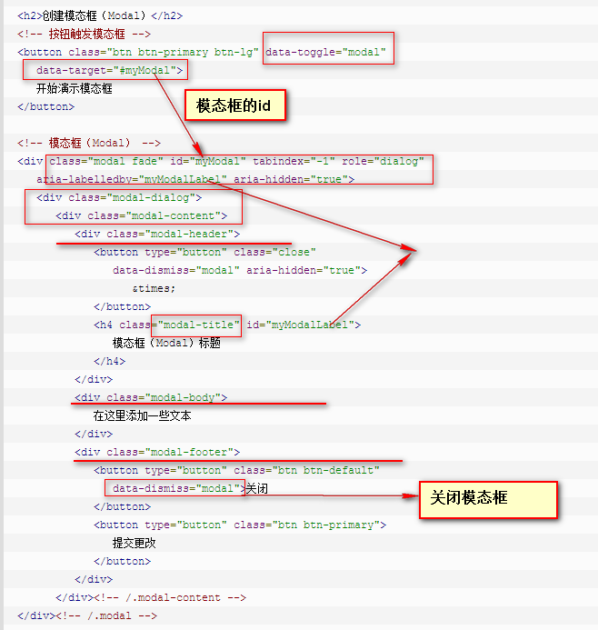

模态框（Modal）插件：
模态框（Modal）是覆盖在父窗体上的子窗体。通常，目的是显示来自一个单独的源的内容，可以在不离开父窗体的情况下有一些互动。子窗体可提供信息、交互等。用法：
1. 通过 data 属性：在控制器元素（比如按钮或者链接）上设置属性 data-toggle="modal"，同时设置 data-target="#identifier" 或 href="#identifier" 来指定要切换的特定的模态框（带有 id="identifier"）。2. 通过 JavaScript：使用这种技术，您可以通过简单的一行 JavaScript 来调用带有 id="identifier" 的模态框：
$('#identifier').modal(options)
